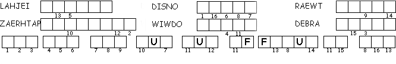

This Week: 1 Kings 17:8-16, (17-24) and Psalm 146 or 1 Kings 17:17-24 and Psalm 30, Galatians 1:11-24, Luke 7:11-17
Elementary School Pew-work
Use these words to fill in the blanks: bread Zarephath Elijah Zarephath bread widow water
The LORD told Elijah, "Go to the town of ________________ in Sidon and live there. I've told a widow in that town to give you food." When ________________ came near the town gate of ________________, he saw a ________________ gathering sticks for a fire. "Would you please bring me a cup of ________________?" he asked. As she left to get it, he asked, "Would you also please bring me a piece of ________________?" The widow answered, "In the name of the living LORD your God, I swear that I don't have any ________________.
|
 |
|
F
K T W Y A M S E
|
Word List YOURSELF ANSWERED BECAUSE ELIJAH SIGHT KINGS FOUND ENEMY WHAT SOLD SAID NRSV LORD HAVE EVIL AHAB THE TO OF ME IS DO |
|
(1 Kings 21:20) Ahab said to Elijah, "Have you found me, O my enemy?" He answered, "I have found you. Because you have sold yourself to do what is evil in the sight of the LORD, (NRSV) |
|
from http://www.efree.mb.ca/lectionarypuzzles. free to distribute for free with this notice. Words are in a straight line left to right or top to bottom |
|
1. Where did
the LORD tell Elijah to go?
__________________________________________________________________________
1. Who did
Elijah see when he got
there?
__________________________________________________________________________
1. What did
Elijah ask for?
__________________________________________________________________________
1. Why did the
widow not agree to give Elijah what he wanted?
__________________________________________________________________________
Next week: 1 Kings 21:1-10, (11-14), 15-21a and Psalm 5:1-8 or 2 Samuel 11:26-12:10, 13-15 and Psalm 32, Galatians 2:15-21, Luke 7:36-8:3